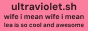
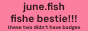
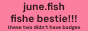
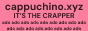
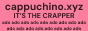
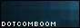
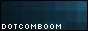

hi, i'm jaiden, and this is a website!
about me
i make computers do funny things
i'm jaiden riordan (i go by {nothing}neko on the internet)
i'm what the stallmanists call a "dirty fucking corpo"
i'm a tinkerer and college student by day, and the coo at fyra labs by all other times
please direct any american express mailers and other mail to jade@e.email
gpg
Jaiden Riordan (nothingneko) jade@fyralabs.com
https://github.com/nothingneko.gpgstuff i've done and fun facts
- i own ~50 laptops (as of dec 27 2024)
- i work on ultramarine linux - primarily releng and hwe work - i'm why we're in pi imager
- speaking of pi, i am a huge rpi fangirl, it's how i got into computing
- ubuntu mate - i am to blame for yaru on it
- made some octii themes, anyone remember octii?
- i got a centos stream desktop to run as an ostree - i think i was the first to do this - it was before ublue did at least
- this site used to be a html port of a site written for the gopher protocol. why? fuck if i know
- i'm a founding member of fyra labs
(these are a few of) my favourite things
- my favourite fish is the tiktaalik
- my usual coffee order is an small iced mocha with oat milk, but my favourite is the same with peppermint :3
- atom was the best text editor ever made and vscode and zed fucking wish they were that good. rest in peace sweet prince
- despite my love of atom i now daily drive vscode rather than pulsar, i just haven't had the time to relearn it
- i prefer green tea, usually sencha
- my favourite controller ever is the gamecube controller
- cherry browns are my switch of choice
- my favourite pie is pumpkin, #2 is pecan
- my favourite pi is raspberry
- i am of the strong belief that the best type of pizza is saint paul/minnesota style, and that the only place to get it since savoy's in downtown closed is from carbone's, and only the original one
the place with the badges!
here's the people i know and what’s that other word, and all kinds of cool stuff, woo
 

 



 

if you're not on this list email me and tell me why you're junky, wunky, lunky, or stunky enough to be here.